Keyboard: ←/→ previous/next, 1/2 to answer
| Arm | Accuracy |
|---|

Data table
| Arm | Accuracy | Accuracy 95% CI | Adjacent substitution rate | Adjacent 95% CI |
|---|---|---|---|---|
| Random floor | 52.1% | 45.9%–58.9% | 47.3% | 40.4%–53.5% |
| TF-IDF retrieval | 27.0% | 15.4%–40.0% | 0.0% | 0.0%–0.0% |
| BM25 retrieval | 28.6% | 17.2%–40.9% | 0.0% | 0.0%–0.0% |
| Oracle ceiling | 100.0% | 94.3%–100.0% | 0.0% | 0.0%–0.0% |
What adjacent substitution is
Every item in this corpus carries a reference answer and one plausible-but-wrong "adjacent" answer: a fact about a semantically close but operationally different entity, drawn from the same regulatory neighbourhood. A rupture disk answer where the question asked about a relief valve. A reclassification provision cited where the alternate-entry provision applies. The two are close enough that a system retrieving on term overlap alone regularly returns the wrong one with full confidence.
23 of the corpus's 68 items are built as minimal pairs: two questions whose correct answers diverge precisely because the device, or the regulatory trigger, differs. Answering one right while getting its partner wrong is the signal the benchmark is built to catch, which is why the primary outcome reported in the README is paired accuracy across those 23 pairs, not per-item accuracy.
No language model has been scored against this corpus yet. What exists are three non-LLM baselines (below) that show the items discriminate, and a real Anthropic adapter with a one-command run script. See "Running a real system" in the README to run one.